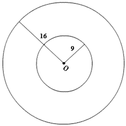
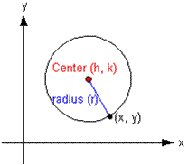
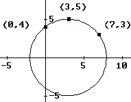
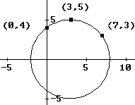

The Circle
Video| Concentric Circles - same center, different radii |  |
| Standard Form of the Equation of a Circle: $(x-h)^2+(y-k)^2=r^2$ |  |
General Form of the Equation of a Circle: $x^2+y^2+Dx+Ey+F=0$ (the $x^2+y^2$ tells you it's a circle)
ex) Find the raidus & center for:
$\table x^2+y^2+8x-2y+13=0; x^2+8x+y^2-2y=-13; x^2+8x+\text"__"+y^2-2y+\text"__"=-13; x^2+8x+\bo 16+y^2-2y+\bo 1=-13+16+1; (x+4)^2+(y-1)^2=4; \text"radius=2, center=(-4,1)"$
ex) Find the raidus & center for:
$\table x^2+y^2+8x-2y+13=0; x^2+8x+y^2-2y=-13; x^2+8x+\text"__"+y^2-2y+\text"__"=-13; x^2+8x+\bo 16+y^2-2y+\bo 1=-13+16+1; (x+4)^2+(y-1)^2=4; \text"radius=2, center=(-4,1)"$
Find the radius & center of the circle passing through these three points:

$\table (0,4), (3,5), (7,3)$

$\table (0,4), (3,5), (7,3)$
| $x^2+y^2+Dx+Ey+F=0$ | ||
|---|---|---|
| $(0,4)$ | $0+16+0D+4E+F=0$ | $0D+4E+F=-16$ |
| $(3,5)$ | $9+25+3D+5E+F=0$ | $3D+5E+F=-34$ |
| $(7,3)$ | $49+9+3D+5E+F=0$ | $3D+5E+F=-58$ |
| $x^2+y^2+Dx+Ey+F=0$ | |
|---|---|
| $(0,4)$ | $0+16+0D+4E+F=0$ |
| $0D+4E+F=-16$ | |
| $(3,5)$ | $9+25+3D+5E+F=0$ |
| $3D+5E+F=-34$ | |
| $(7,3)$ | $49+9+3D+5E+F=0$ |
| $3D+5E+F=-58$ | |
$[\table 0,4,1,-16; 3,5,1,-34; 7,3,1,-58]$
$\table \text"rref"; D=-6; E=0; F=-16$
$\table x^2+y^2+Dx+Ey+F=0; x^2+y^2-6x+0y-16=0; x^2-6x+__+y^2+0y+__=16; x^2-6x+\bo9\+y^2+0y+\bo0\=16+9+0; (x-3)^2+y^2=25; \text"radius=5, center=(3,0)"$
$\table x^2+y^2+Dx+Ey+F=0; x^2+y^2-6x+0y-16=0; x^2-6x+__+y^2+0y+__=16; x^2-6x+\bo9\+y^2+0y+\bo0\=16+9+0; (x-3)^2+y^2=25; \text"radius=5, center=(3,0)"$